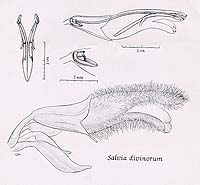

THE BOTANY OF SALVIA DIVINORUM (LABIATAE)Amended Description of Salvia divinorumSalvia divinorum Epl. & Jativa, Bot. Mus. Leafl. 20: 75- 76. 1962. Type: Mexico. Edo. Oaxaca: San JosÇ Tenango, 8 Oct 1962, Albert Hofmann & R. Gordon Wasson s.n. (holotype: LA; isotypes: LA in UC, ECON).  Perennial herb, mostly 0.5-1.5 m tall vegetatively, flowering stems 1-2(-3) m tall, taller stems decumbent for part of their length; stems often trailing along rocky streambanks, sometimes in running water, rooting copiously at the nodes and sometimes along internodes, with broken, trailing, and drooping stems resuming erect growth at stem apices or by axillary branching, the new, vigorous shoots often arising from axils of old, senescent stems, these decaying or dead stems often appearing as woody caudices. Stems quadrangular, with flanged angles, hollow, fleshy and crisp, translucent, breaking easily, hirtellous, green. Leaves opposite, elliptic to ovate, acuminate to caudate at the apex, attenuate at the base, petioles scarcely differentiated from the blade, 10-25(-30) cm long, 5-10 cm wide, glabrous above, sparingly glandular-punctate below; margins irregularly serrate or crenate-serrate, to entire at the base. Racemes simple, erect, 30-40 cm long, with 2-4 cm long internodes; cymules with 3-6(-12) flowers each; rachis hirsute, glabrate. Bracts sessile, concave, ovate, rounded at the base, acuminate-caudate at the apex, 1-2(-3) cm long, 0.6-1 cm wide, mostly violet, tardily deciduous. Pedicels straight, slender, hirsute, violet, 4-9 mm long. Calyx gradually widened above, 10-12 mm long, with subequal lips, glandular-hispid along the veins in bud, glabrate to glandular-puberulent throughout, violet; upper lip 1.5 mm long, with 3 major veins. Corolla sigmoid, 28-32 mm long, densely villous with multicellular translucent hairs 0.5-2 mm long especially on upper and lower lips, glabrous within, white, drying brown in herbarium material, lips becoming tinged blue with age; tube 19-22 mm long, 2 mm high by 1.5 mm wide at the narrowest point near the throat; galea (upper lip) 8-9(10) mm long; lower lip cupped, 5 mm long, 7 mm wide when flattened out, middle lobe emarginate. Stamens included within the galea, inserted near the throat, glabrous, white; connectives somewhat rigid, slightly arcuate, 15-16 mm long, 17-18 mm long when flattened out, rudders 10-11 mm long, entire; anthers 2 mm long; pollen white. Style 27-32 mm long, densely bearded below the stigma, white; posterior (upper) stigma branch exserted beyond the galea and curling upward, 2 mm long, 2.5 mm long when flattened out; anterior branch sometimes slightly exserted from the galea, somewhat carinate, 1.5 mm long. Gynobase horn 3 mm long, 1.2 mm wide, glabrous, white. Nutlets when mature 1.8-2 mm long, 1(1.2) mm wide, somewhat pyriform, minutely tuberculate, dark brown, to date never collected in the wild. Endemic to the Sierra Mazateca, Oaxaca, Mexico, at elev. of 300-1800 m, in primary and secondary cloud forest and tropical evergreen forest, with many populations cultivated or semi-cultivated (weedy), often spreading vegetatively along streambanks, flowering sporadically from September to May.
Specimens examined: MEXICO. Edo. OAXACA. Sierra Mazateca: 2 km NNW of Huautla market, 6 Jan
1984, Reisfield & Solheim 1077 (WIS); 1 km SW of Huautla market, 15 Jan 1984,
Reisfield & Solheim
1090 (WIS); ca. 2 km SW of Huautla market, 15 Jan 1984, Reisfield & Solheim 1092 (WIS); Huautla,
1960, Wasson s.n. (ECON); Huautla, 24 Nov 1962, Bunnell s.n. (LA in UC); Huautla, Sep 1957,
Gomez-Pompa 500-E (GH); Cuauhtemoc, ca. 4 km NE of Santa Maria Chilchotla, 16 Jan 1984, Reisfield
& Solheim 1093 (WIS); La Soledad, ca. 3.5 km WNW of Ayautla, 13 Feb 1984,
Reisfield & Solheim
1111 (WIS); 2.5 km W of Ayautla on road to San Juan, 13 Feb 1984, Reisfield & Solheim 1112 (WIS);
Cerro Alto, ca. 2 km NE of Ayautla, 13 Feb 1984, Reisfield & Solheim 1109 (WIS); Cerro
Camaron:
0.5 km W of Cerro Quemado Centro, 8 Feb 1984, Reisfield & Solheim 1102 (WIS), ca. 0.75 km W of
Cerro Quemado, 9 Feb 1984, Reisfield & Solheim 1103 (WIS), 1 km W of Cerro Quemado, 9 Feb 1984,
Reisfield & Solheim 1106 (WIS), 1.5 km W of Cerro Quemado, 9 Feb 1984,
Reisfield & Solheim 1107
(WIS), ca. 1 km NNW of Cerro Quemado centro, 10 Feb 1984, Reisfield & Solheim 1108 (WIS), 1 km W
of Cerro Quemado, 27 Oct 1985, Reisfield 1242 (WIS); Cerro Quemado, 2 Mar 1980,
Valdes & Paul s.n. (MICH).
UNITED STATES. California.
California State University,
Hayward,
cultivated from material of uncertain origin, 24 Jan 1980, Wilcox s.n. (ECON); Northridge,
California, cultivated at San Fernando Valley State College from material of uncertain origin,
Emboden s.n. (ECON). Michigan. Univ. of Michigan Botanical Gardens, cultivated from material obtained at Cerro
Quemado, 20 Apr 1980, 17 Nov 1980, Valdes s.n. (MICH).
|